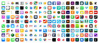
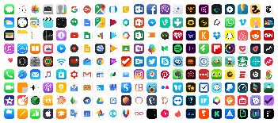

Toepassingen laag
De toepassingen laag van een computer is waar je als gebruiker direct mee werkt.
Apps
Apps zijn softwareprogramma's die je direct gebruikt om specifieke taken uit te voeren. Apps zijn ontworpen om je computergebruik
efficiënter en leuker te maken.
Hier zijn een paar voorbeelden van apps die meestal te vinden zijn op een computer
 2. E-mailprogramma's: zoals Outlook of Gmail, deze apps maken het natuurlijk mogelijk om e-mails te typen, verzenden en ontvangen.
3. Spellen: Spelletjes op je computer zorgen voor wat extra entertainment en ze kunnen variëren van eenvoudige puzzels tot ingewikkelde strategische spellen.
Apps werken op het besturingssysteem van je computer en maken gebruik van de onderliggende hardware en software om hun taken uit te voeren.

API's
API's zijn een soort van als een set van regels en tools waarmee verschillende softwareprogramma's met elkaar kunnen communiceren.
Ze zorgen ervoor dat de apps gegevens en functies kunnen delen zonder dat je als gebruiker hoeft te begrijpen hoe alles inwendig werkt.
Ik ga u hieronder uitleggen hoe het werkt.
1. Data-uitwisseling: Stel dat je een weerapp gebruikt die de recente weersinformatie toont. Deze app maakt dan mogelijk gebruik van een API om de gegevens van een
weerwebsite op te halen. De API zorgt ervoor dat de app de juiste informatie ontvangt en toont.
2. Functionaliteit uitbreiden: Een andere manier waarop API's werken is door er extra functionaliteit toe te voegen aan een app.
Bijvoorbeeld een app voor fotobewerking kan een API gebruiken om toegang te krijgen tot speciale filters.
3. Integratie: API's helpen bij de integratie van verschillende systemen. Als voorbeeld, als je een website hebt die betalingen
accepteert via PayPal, dan gebruik je een API om je website met het PayPal systeem te verbinden. Hierdoor wordt het mogelijk je betalingen te
verwerken zonder dat je de ingewikkelde betalingssystemen zelf hoeft te bouwen.